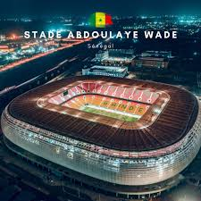
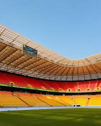
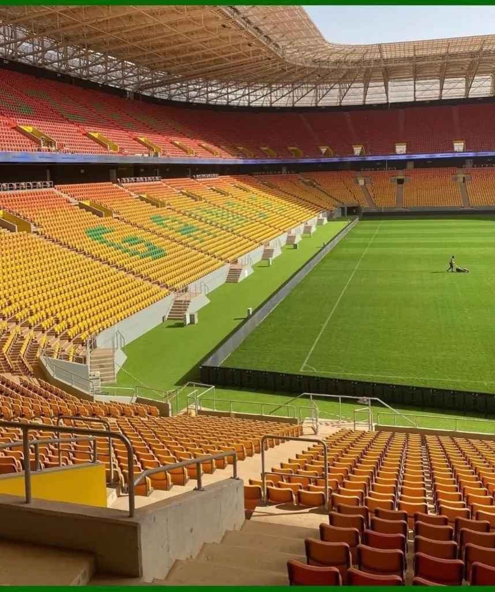
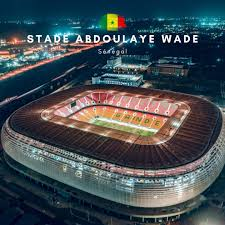
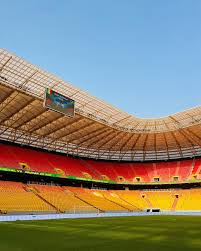
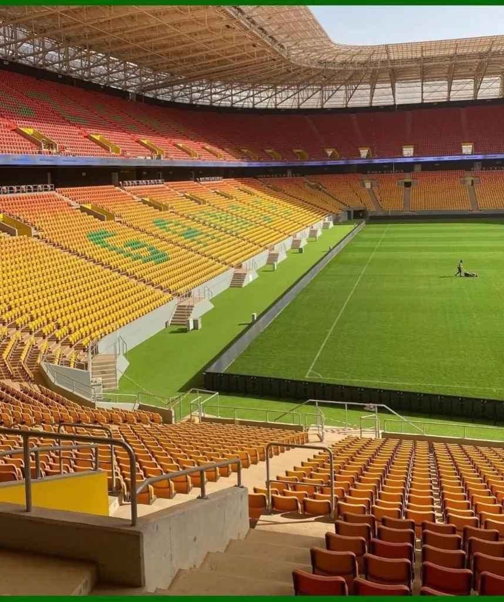
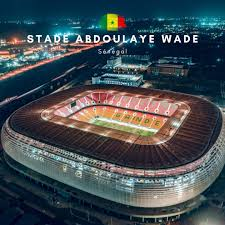
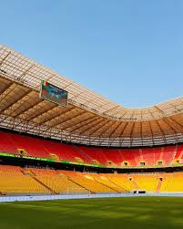
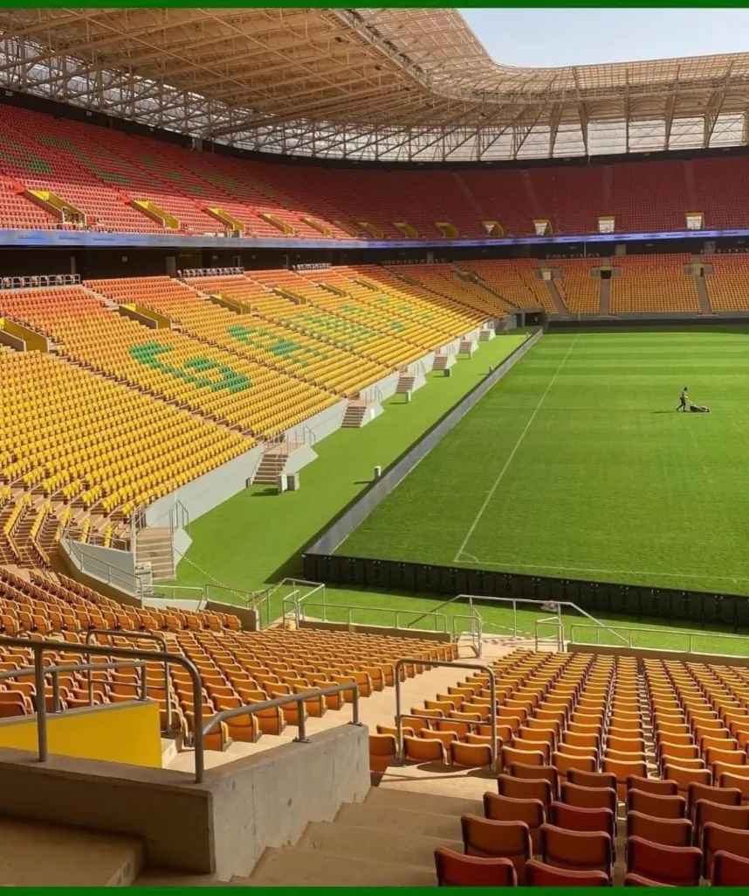

Stade Abdoulaye Wade,Diamniadio,Senegal
Adresse,Diamniadio
Carte:voici la carte sur google maps
Photo du stade
 





Stade Abdoulaye Wade,Diamniadio,Senegal
Adresse,Diamniadio
Carte:voici la carte sur google maps
Photo du stade



Transports en commun
Bus:Lignes 53,68,86(Arret non loin du stade)
Train/TER:Gare de Diamniadio à 5 minutes du stade
Voiture:Autoroute A1,Sortie Diamniadio
Navette
Trajet:Gare TER-Stade
Horaires:De 8h à 20h, toutes les 30 minutesCoût:Gratuit pour les détenteurs de billets
Taxis a VTC
Taxis disponibles autour du stade
Application recommandée: Yassir,Heetch,BKG,inDrive,Yango
Parking
Capacité:500 places
Coût:Gratuit pour les détenteurs de billets
Sécurité:Surveillance 24/7
Accessibilité
Accès PMR:Entrées et places réservées
Signalétique:Chemins balisés et panneaux d'information
Assistance:Personnel formé pour aider les personnes à mobilité réduite
Informations supplémentaires
Toilettes:Toilettes accessibles aux personnes à mobilité réduite
Restauration:Points de restauration adaptés
Consignes:Consignes pour les bagages et objets encombrants
Sécurité:Contrôles de sécurité à l'entrée du stade
Radisson Hotel Dakar Diamniadio
Tarifs: à partir de 100 000 FCFA la nuit
Réservation: cliquer ici
Distance: 10 minutes en voiture du stade
AVO Sport Résidence,Diamniadio
Tarifs: à partir de 50 000 FCFA la nuit
Réservation: cliquer ici
Distance: 15 minutes en voiture du stade
Four Points by Sheraton Dakar
Tarifs: à partir de 80 000 FCFA la nuit
Réservation: cliquer ici
Distance: 25 minutes en voiture du stade
Le Relais de l'Artisan
Cuisine: Sénégalaise et internationale
Tarifs: 5 000 à 20 000 FCFA par plat
Menu: nOs dElicEs
Réservation: www.relaisartisansn.com
Distance: 10 minutes en voiture du stade
Pensez à réserver à l'avance
Arrivez tôt pour éviter les files d'attente
Respectez les consignes de sécurité
Les sacs seront fouillés à l'entrée
Objets interdits: armes, bouteilles en verre, drogues, sprays, etc.